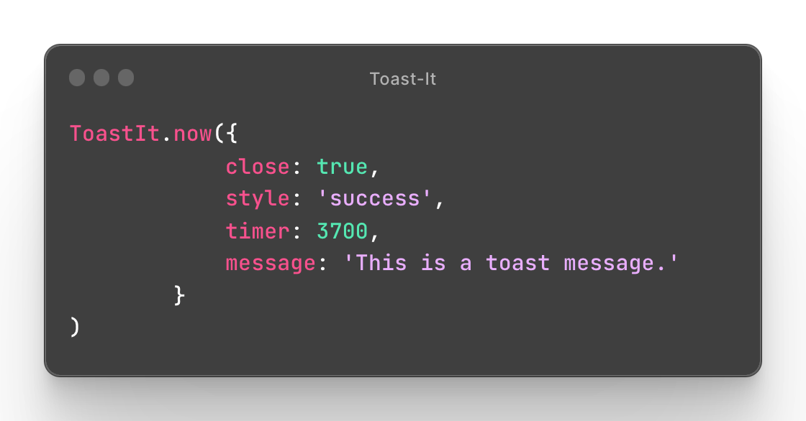

Generic message
A very simple generic message. This tone is using the default colour for the background. If you miss to configure the style, this tone will be shown by default.
Notification message
This message is using the classic blue colour to represent a very simple notification. You can pick to show or not a closing button at the end of the message.
Success message
This message is using the classic green colour to represent a success notification. You can pick to show or not a closing button at the end of the message.
Warning message
This message is using the classic warning colour to represent a warning or a caution notification. You can pick to show or not a closing button at the end of the message.
Warning messages are using by default a font-weight=700 to get a better message reading.
Error message
This message is using the red colour to represent an error message. You can pick to show or not a closing button at the end of the message.
Error messages are using by default a font-weight=700 to get a better message reading.